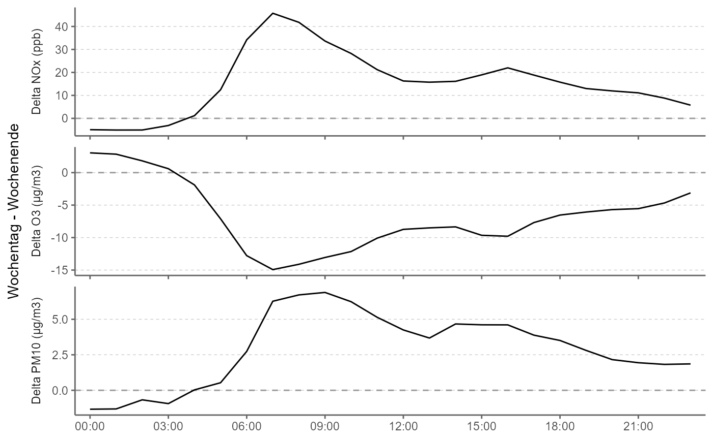

rOstluft::format_rolf() format) for one diurnal time course-stat
plotted as difference between weekdays - weekendR/ggperiodic.R
ggdiurnal_weekend_diff.Rdggplot2-wrapper to summarise and plot data (of rOstluft::format_rolf() format) for one diurnal time course-stat
plotted as difference between weekdays - weekend
ggdiurnal_weekend_diff(data, y = "value", nmin = 3, fun = list(middle = "mean"), expand_xscale = 0.025, ...)
| data | a data.frame or tibble containing the data |
|---|---|
| y | a character string specifying the taget variable to be summarised, usually "value".
outcomes of |
| fun | function or list of functions for summary, can be named (then the outut stat is named after the function's name);
Strings matching the regular expression |
| expand_xscale | multiplicative range expansion factor |
| ... | further arguments passed on to |
ggplot2::ggplot() object
fn <- rOstluft.data::f("Zch_Stampfenbachstrasse_2010-2014.csv") data <- rOstluft::read_airmo_csv(fn) %>% dplyr::filter(parameter %in% c("NOx", "O3", "PM10")) %>% rOstluft::resample(new_interval = "h1") ggdiurnal_weekend_diff(data)